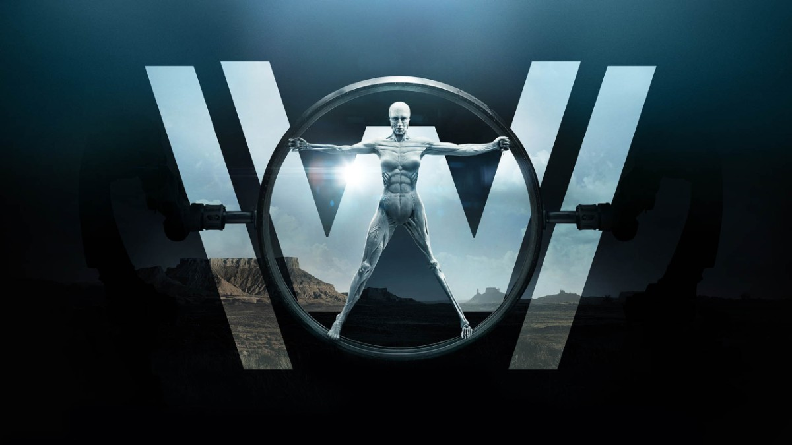
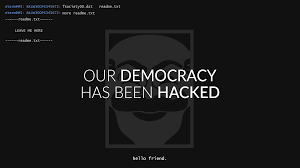
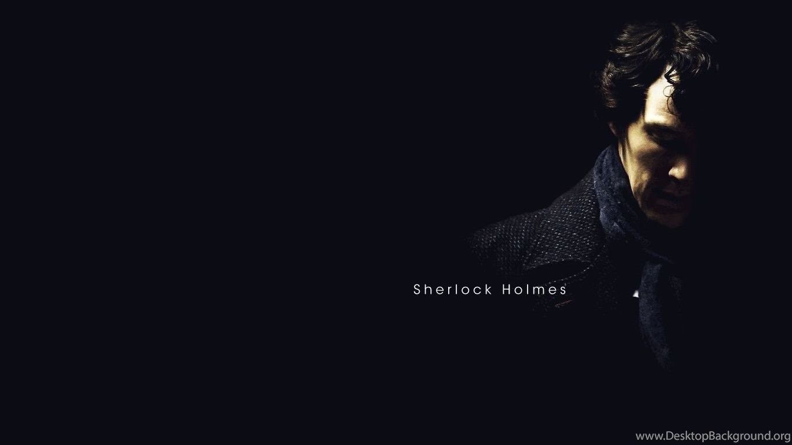
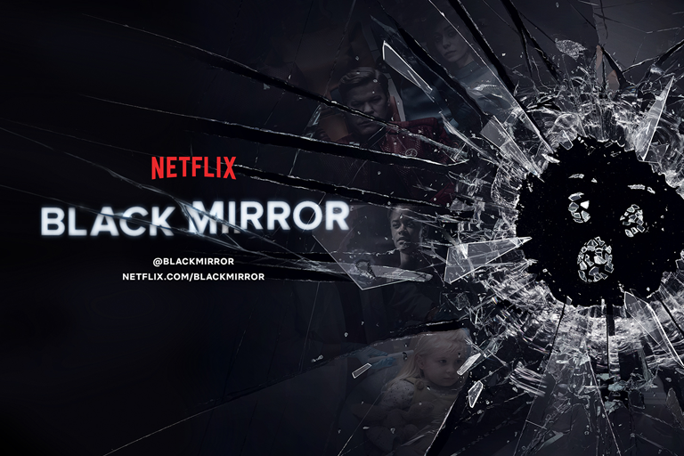

сериалы
Лучшие сериалы 21 века по моему мнению
1. Игра Престолов

«Игра́ престо́лов» (англ. Game of Thrones) — американский телесериал в жанре фэнтези, основанный на цикле романов «Песнь Льда и Огня» Джорджа Р. Р. Мартина.Действие «Игры престолов» происходит в вымышленном мире, напоминающем средневековую Европу. В сериале одновременно действует множество персонажей и развивается несколько сюжетных линий. Основных сюжетных арок три: первая посвящена борьбе нескольких влиятельных домов за Железный Трон Семи Королевств либо за независимость от него; вторая — потомку свергнутой династии правителей, принцессе-изгнаннице, планирующей вернуть престол; третья — древнему братству, охраняющему государство от угроз с севера.
Для сериала характерно отсутствие строго положительных персонажей, многие герои совершают неоднозначные поступки и могут погибнуть на экране неожиданно для зрителя. В сериале присутствуют фантастические существа — драконы и нежить. Специально для сериала были разработаны искусственные языки: дотракийский, высокий валирийский и несколько его диалектов.
2. Мир Дикого Запада

Место действия — вымышленный футуристический парк развлечений «Мир Дикого запада», населённый андроидами. «Мир Дикого запада» обслуживает высокопоставленных и богатых гостей, которые могут чем угодно заниматься в парке, не опасаясь возмездия со стороны роботов
Телесериал получил высокие отзывы от зрительской аудитории и добился признания со стороны критиков, которые высоко оценили визуальные эффекты и необычную форму подачи повествования.
3. Мистер Робот
«Ми́стер Ро́бот» (англ. Mr. Robot) — американский психологический телесериал, созданный Сэмом Эсмейлом. Сериал повествует об Эллиоте Алдерсоне — молодом инженере кибербезопасности днём и талантливом хакере ночью. Эллиот оказывается на перепутье, когда таинственный лидер подпольной хакерской группы пытается завербовать его, чтобы уничтожить корпорацию, которой он оказывает свои услуги. Вследствие своих личных убеждений Эллиот пытается устоять перед возможностью свергнуть руководителей, которые, по его мнению, управляют миром и рушат его.
4. Карточный Домик

Амбициозный конгрессмен от Демократической партии Фрэнк Андервуд в обмен на обещание сделать его Государственным секретарём США помогает Гаррету Уокеру стать президентом США. Однако после выборов глава администрации президента Линда Васкес сообщает Андервуду, что он не получит должность. Взбешённые предательством Фрэнк и его жена готовы пойти на всё, чтобы отомстить новоиспечённому президенту.
5. Шерлок
Сериал представляет собой вольную адаптацию произведений Cэра Артура Конан Дойла о частном детективе Шерлоке Холмсе и его напарнике, докторе Джоне Ватсоне. Действие перенесено из XIX в XXI век; консультирующий детектив Шерлок Холмс, подыскивая соседа по квартире, с помощью своего товарища, знакомится с Джоном Ватсоном — военным врачом, вернувшимся из Афганистана. Шерлок сразу впечатляет Ватсона, рассказав ему о нём самом: о том, что он служил в Афганистане, о том, что боль в его ноге — психосоматическая, и о том, что у него есть брат. Они поселяются в доме 221 Б по Бейкер-стрит у пожилой хозяйки миссис Хадсон. Вместе Шерлок и Джон помогают Скотланд-Ярду в раскрытии сложных дел, используя методы наблюдения, анализа, дедукции, а также современные технологии, такие как интернет и мобильные телефоны.
6. Черное Зеркало

«Чёрное зе́ркало» (англ. Black Mirror) — британский телесериал-антология, созданный по сценарию Чарли Брукера. Серии не связаны между собой ни сюжетом, ни актёрами, ни временем или местом повествования. По словам Брукера, все сюжеты объединяет лишь сатира на тот образ жизни, что распространён в современном обществе. Лейтмотив — влияние информационных технологий на человеческие отношения.
Создатель сериала Чарли Брукер объясняет, что название шоу «Чёрное зеркало» является отсылкой к чёрным дисплеям электронных гаджетов, которые есть в каждом доме или квартире. «Если технологии — это наркотики, а они действительно похожи на наркотики, то каковы будут побочные эффекты? Пограничная область между наслаждением и дискомфортом и есть место действия моего драматического сериала „Чёрное зеркало“. Вы найдёте чёрное зеркало на каждой стене, на каждом столе, в каждой ладони: холодный и блестящий экран телевизора, монитора, смартфона»